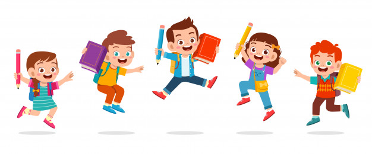
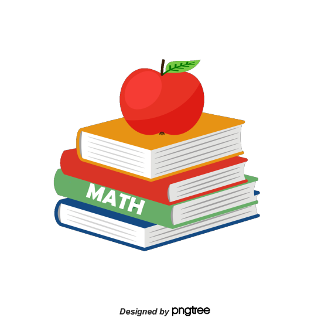

Educacion a la mano con FUNDEHI

La presente pagina, llamada Educacion a la mano con FUNDEHI, tiene como objetivo, ser una herramienta educativa para los niños que pertenecen a la fundación FUNDEHI, que se encuentran cursando desde primero hasta grado quinto, la cual se encuentra enfocada a que los niños, puedan tener un aprendizaje mucho mas dinamico y sencillo en el area de matematicas y lenguaje, por lo que se encontraran los temas mas importantes de cada curso. Esperamos que sea de gran ayuda para la fundación, y que sea realmente productiva.
Objetivos
Refuerzo de tus conocimientos
Desarrollar las habilidades comunicativas de lectura, escritura y expresión oral a través de talleres de refuerzo enfocados a cursos desde el primero hasta quinto de primaria, teniendo como base los lineamientos curriculares y la política de estándares básicos en el área de español. Aparte de eso se busca potenciar las capacidades interpretativas, argumentativa y propositiva en concordancia con la misión y la visión institucional que es el objetivo de la fundación.
Con respecto a el área de matemáticas, se busca el mejoramiento de las diferentes habilidades de comprensión y resolución de problemas matemáticos, desde las cosas más básicas como sumas o restas hasta operaciones con números decimales.